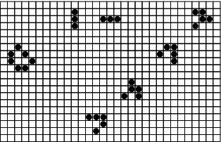

Figure 1: Some Life examples. On the left is a stable loaf pattern. In the upper left are the two phases of the blinker, an oscillator with period 2. In a diagonal line from the lower left to the upper right are the four phases a glider goes through as it traverses the universe.
Back to Article